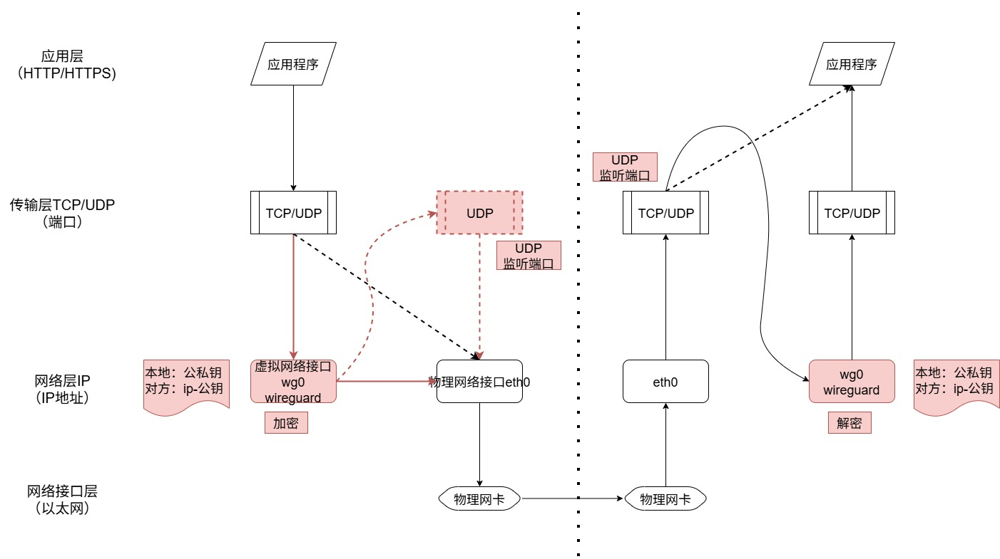

WireGuard一直在我的TODO清单内，最近在AI AGENT的指导下很快就搭建起来了。AI时代，写博客的价值可能在于真实，简洁。
使用体验
先分享一下个人感受，一如linux生态的哲学理念，WireGuard简洁高效，很有程序员的风格（不考虑提升复杂度的易用性——程序员大多可以忍受能力范围内的不易用，但对优雅的解决问题有洁癖，喜欢分而治之、解耦），使用之后能对原理有更深入的理解（作为程序员，我一直觉得，学编译原理就应该学gcc怎么用，学网络编程也应该学习一下像wireguard这样的工具，比啃书有趣有意义多了）。
相对的，对于非程序员用户，特别是那些只想快速使用不想折腾的用户，就不一定那么讨喜了，因为并非开箱即用对用户友好。
原理
VPN
首先需要说明的是，WireGuard的定位是虚拟专用网络VPN（Virtual Private Network）技术，为的是让多个节点在一个虚拟的专用安全的网络中通讯，不是用于代理，理解这一点对后面理解WireGuard的配置方式很重要。
可能是因为中文互联网环境中主要把WireGuard用于代理访问外部网络，又由于wireguard真的很安全，才导致WireGuard变得敏感。同时也会导致第一次使用的时候产生误会，总觉得应该会是类似服务器-客户端的模式，实际上，WireGurad的网络配置更像一个去中心化的点对点通讯模式。
实现原理
实际上，官网有一个很详细的介绍：官方文档
这里，一图胜千言：

- 虚拟网络接口。WireGuard工作在网络层，提供了一个虚拟网络接口，需要为其分配IP地址。因此，对于上层应用程序来说，能够实现无感，只要配置好路由，使所有网络流量都走到这个新的虚拟网络接口而不是旧的物理网络接口，那么所有网络通讯就都默认走wireguard提供的VPN网络了。同时，所有对网络接口进行操作的工具和命令都能继续使用，因为它就是一个“网络接口”，只是是“虚拟的”而已。
- 网络隧道。实际上，WireGuard最终也是把发给它的数据包重新包装成UDP数据包，发到原有的物理网络接口，再把数据包发出去。这样的好处是简单，可以尽量复用已有的功能。所以，Wireguard主要是对数据包做了加密，实现数据安全，这就是网络隧道的含义。而Wireguard为了简洁，并不处理为了易用性带来复杂性的密钥交换的工作，这就是为什么我说它很有程序员的风格的意思，只关注解决核心的问题。
对照图中的流程，大致是这样的：
应用程序进行网络通讯，一般发送报文时，会通过传输层、网络层、再到网络接口层，接收报文时反过来，传输层根据报文要送达的端口决定数据发到哪个目标应用程序。
添加WireGuard之后，首先要把网络流量路由到新的虚拟网络接口，wireguard对数据包加密，重新封装为udp数据包发给原有的物理网络接口，接收方一层层处理完后，传输层根据数据包的目标端口，决定把数据包发给wireguard，这里，wireguard对传输层来说，就与应用层的某个应用程序一样。之后wireguard就能解密数据包，再次把数据包发给传输层，传输层再次判断数据包的目标端口，最后到达最终的应用层的某个应用程序。
实操（Ubuntu为例）
建立网络
安装WireGuard内核模块
WireGuard的内核实现已被正式合并到Linux主线内核5.6版本中，运行在内核速度才会快。1
2
3
4
5
6
7
8modinfo wireguard #如果显示模块信息（包括路径、描述等），说明内核模块可用
sudo apt install wireguard-dkms #安装
lsmod | grep wireguard #检查模块是否已加载
sudo modprobe wireguard #加载
wg --version #检查wireguard-tools是否安装
sudo apt install wireguard-tools #安装生成密钥对
1
2
3umask 077
wg genkey > privatekey
wg pubkey < privatekey > publickey配置
在/etc/wireguard/目录下生成wg0.conf配置文件
服务器A1
2
3
4
5
6
7
8
9
10
11
12
13[Interface]
Address = 10.0.0.1/32 # 虚拟专用网络内的自己的IP
ListenPort = 51820 # 监听端口，传输层对发往该端口的报文转发给wireguard
PrivateKey = 4INhRZxOWKy/GEbOjWw1yuFrORmvpX4be42qDoDAR3U= # 私钥，用于加密和身份认证
[Peer]
PublicKey = b/J3XqiodZaiFXHYOeCxchM1Q357c7y2Bx7r6hXlphI= # 虚拟专用网络内的其它服务器的公钥，用于加密和身份认证
AllowedIPs = 10.0.0.2/32 # 对于发送方，如果报文目的地址是这个ip，则使用这里的公钥加密，发往对应的公网IP和端口；对于接收方，如果源地址是这个ip，则使用这里的公钥验证身份
Endpoint = 182.255.74.22:51820 # 其它服务器的公网IP和端口
[Peer]
[Peer]
服务器B的配置与服务器A类似1
2
3
4
5
6
7
8
9
10
11
12
13[Interface]
Address = 10.0.0.2/32
ListenPort = 51820
PrivateKey = OWKhRZxOWKy/GEbOjWw1yuFrORmvpX4be42qDoDAR1yu
[Peer]
PublicKey = R75v69dIwJxV62ujghTwU7JxSOlaIkH8Ya+8h0kwIF8=
AllowedIPs = 10.0.0.1/32
Endpoint = 182.255.74.21:51820
[Peer]
[Peer]
启动
根据/etc/wireguard/目录下的wg0.conf配置文件，启动服务：1
sudo wg-quick up wg0
验证
在服务器A上ping服务器B1
ping 10.0.0.2
在服务器B上ping服务器A1
ping 10.0.0.1
通过上面操作，由服务器A和服务器B组成的VPN网络就搭建起来了，从配置可见，服务器A和服务器B并没有太大差异。
代理
当使用wireguard做代理时，可以参考这个介绍： https://wiki.alpinelinux.cn/wiki/Configure_a_Wireguard_interface_(wg)
在代理模式下，配置就有明显的服务器、客户端的差异区分了。
- 修改客户端路由
前面说过，增加了虚拟网络接口后，要把网络流量路由到新的这个网络接口才有效。
实际上，前面服务器A的wg-quick up wg0操作背后，其实就运行了ip route add 10.0.0.2/32 dev wg0操作，把发往10.0.0.2地址的流量转到wg0网络接口。
为了把所有流量都发往代理服务器B，服务器A对服务器B的AllowedIPs可以设置为0.0.0.0/0，而不是10.0.0.2/32。这样，服务器A内，发往任意目标IP的报文都会发到wg0网络接口。同时，任意源IP的报文都会允许通过服务器B进来。
参考官网文档的原文描述：1
2
3
4
5
6
7In the case of a WireGuard peer who wishes to route all traffic through another WireGuard peer, the cryptokey routing table could be configured more simply as:
Configuration 2a
| Interface Public Key | Interface Private Key | Listening UDP Port |
|gN65...z6EA | gI6E...fWGE | 21841 |
|Peer Public Key | Allowed Source IPs |
|HIgo...8ykw | 0.0.0.0/0 |
Here, the peer authorizes HIgo...f8yk to put packets onto wg0 with any source IP, and all packets that are outgoing on wg0 will be encrypted using the secure session associated with that public key and sent to that peer’s endpoint.
如果不是用wg-quick up操作的，可以参考如下命令行：1
2
3
4
5
6ip route show default # 查询原来的默认路由
#default via 192.168.0.1 dev enp0s25 proto dhcp metric 100
sudo ip route del default # 删掉原来的默认路由
sudo ip route add 182.255.74.22/32 via 192.168.0.1 dev enp0s25 # 服务器B的真实IP还走原来的物理网络接口路由
sudo ip route add default via 10.0.0.1 dev wg0 # 其它的报文都走虚拟网络接口路由
echo "nameserver 8.8.8.8" | sudo tee /etc/resolv.conf # 使用固定的域名查询，避免流转转发之后引发的域名查询失败
- 修改服务器端的报文转发
要作为代理服务器，节点就需要把不是发给自己的数据包再次转发出去。
按正常流程，处在网络层的wg0收到数据包后，核对目标IP地址，默认只收发给自己的包，不是自己的包则丢弃。
通过如下命令，wg0会把数据包进行转发，数据包按路由规则再次回到物理网络接口eth0，然后发送出去，这样就实现了网络代理。1
2
3
4sysctl -w net.ipv4.ip_forward=1 #开启 IPv4 转发（IP forwarding，IP 转发：允许内核把从一个网卡收到的包从另一个网卡转发出去，即充当路由器）。默认值为 0（只处理发给本机的包）。不开启的话，后面 iptables 的转发规则全部无效。
iptables -A FORWARD -i wg0 -j ACCEPT # 放行所有从 WireGuard 接口进来的、需要转发的流量（客户端 → 服务器 → 外网的去程）。
iptables -A FORWARD -o wg0 -j ACCEPT # 放行所有要转发进 WireGuard 隧道的流量（外网 → 服务器 → 客户端的回程）。
iptables -t nat -A POSTROUTING -s 10.0.0.0/24 -o eth0 -j MASQUERADE # 把包的源 IP 改写成 eth0 自身的 IP。这样外网回包能正确回到服务器，再由服务器经隧道转回客户端。